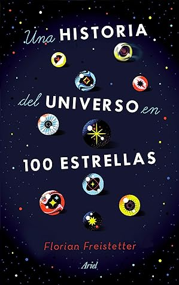

Una historia del universo en 100 estrellas
Reseña por Jorge I. Zuluaga

Ver reseña en GoodReads (necesita cuenta)
De lo mejor que leerás de astronomía sin hacer mucho esfuerzo; sin despelucarte tratando de entender un diagrama científico o un mapa estelar; o navegando entre historias antiguas que poco o nada tienen que ver con los increíbles desarrollos de la astronomía contemporánea.
Comencé a leer el libro como parte de un ejercicio académico. Frecuentemente lo recomiendo en mis cursos divulgativos de astrofísica de modo que debía leerlo. Recomiendo el libro precisamente porque sé que es un texto que puede ser leído por personas de muchos niveles. Lo curioso es que algunas de las personas que han participado en mis cursos y han leído el libro, lo han reseñado de formas diversas, algunas manifestando admiración y deleite, otras con un poco de decepción. Pero así son los libros.
Para alguien que se dedica profesionalmente a esta disciplina, "Una historia del universo en 100 estrellas" puede parecer al principio bastante trivial: una colección heterogénea y superficial de datos aparentemente trillados y bastante bien conocidos en el gremio. Por lo menos esa fue la impresión que me lleve yo al principio.
Afortunadamente, yo sufro de esta condición extraña que me lleva a no abandonar ningún libro, incluso si no me complace inicialmente. Con el tiempo he aprendido que muchos libros difíciles son como las personas complicadas: solo hay que darles tiempo para encontrar lo que les hace únicos.
Con "Una historia del universo en 100 estrellas" al llegar a la estrella número 16, 62 Orionis, empecé a hacerme a una idea clase del verdadero valor del libro (les invito para que descubran por su cuenta porqué a partir de esta estrella en particular).
Como seguramente habrán leído en la descripción, "Una historia del universo en 100 estrellas" hace un recorrido por el Universo, desde el Big-Bang hasta el presente, desde la galaxia más remota observada a la fecha, hasta las inmediaciones del sistema solar, o debo decir mejor, hasta el interior del sistema solar mismo (lean la excelente entrada sobre Gliese 710 -estrella 92- o sobre la Estrella de Scholz que ocupa el capítulo 76); lo hace a través de 100 capítulos cortos y muy bien escritos, que tienen como protagonistas precisamente 100 objetos astronómicos, en su inmensa mayoría estrellas.
El libro contiene anécdotas históricas, explicaciones científicas en todo rigor -aunque sin un solo diagrama o imagen para apoyarlas ¡tremendo logro!-, reporta descubrimiento muy recientes en astrofísica, hace reflexiones personales sobre algunos descubrimientos, además de la colección de descripciones básica de los objetos que describe.
Me gusto mucho como el autor teje lazos muy originales entre distintas áreas de la ciencia y la astrofísica, conexiones que pocas personas hacen y que ponen de relevancia el increíble grado de interconexión que existe entre las disciplinas científicas. Para un excelente ejemplo ejemplo recomiendo el capítulo "Spica, el cambio climático y la mecánica celeste" ¡me encantó!
Por supuesto, no todo es color de rosa. Algunas explicaciones son demasiado superficiales para personas que apenas se inician en la astronomía. Las personas que sin ser expertas, tienen algún recorrido y buscan detalles y datos más profundos, se verán algo decepcionadas. No hay una sola imagen o diagrama en todo el libro, lo que es significativo para un texto de astronomía (aunque puedo entender perfectamente las razones para no incluirlas).
Una pieza ligera, sobre un tema de gran extensión y profundidad.